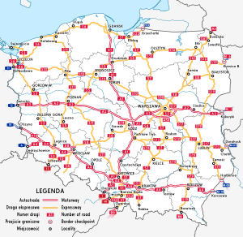
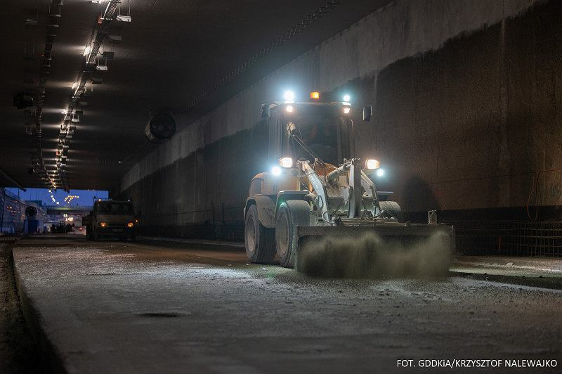

Obecnie w Polsce posiadamy 6 autostrad, 22 drogi ekspresowe, 98 dróg krajowych oraz 855 dróg wojewódzkich.
Projektowaniem,budowaniem oraz utrzymaniem dróg zajmuje się Generalna Dyrekcja Dróg Krajowych i Autostrad
W tym roku do użytku oddano ponad 40km autostrad, 308 dróg ekspresowych oraz 38 odcinków krajowych
